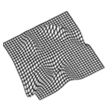

|  |
|
The SurfaceGrid dataset contains nearly a million 512x512 images:
- 2k two-variable functions
- 20k depth maps from 10 camera viewpoints
- 76.6k grid- and line- marked surfaces
See here for a full list of the dataset contents.
All depth maps and most surface types are generated for all 2k functions. There are 6 surface types in the Surfaces/Test subfolder that are rendered only for 100 functions 1900-1999.
The data is provided in .npy format, which can be loaded using numpy.load().
Files are named as follows: imageType_viewpoint_maskAngle_gridResolution_imageIndex.npy.
- imageType = function, depth, or surface
- viewpoint = a45e22p5 = azimuth=45 and elevation=22.5 degrees
- maskAngle = m50 = grid angled by 50 degrees
- gridResolution = x20y28 = grid lines have dx=20 and dy=28
- gridResolution = x37 = lines not grids that have dx=37 So a file
named surface_a30e60_m30_y20_100.npy is the line-marked surface
corresponding to function 100, viewed from an azimuth=30 and
elevation=60 degrees,
where the lines have been angled by 30 degrees off the x-axis and were
spaced 20 pixels apart pre-projection.
If you find this dataset helpful in your research, please cite the paper.